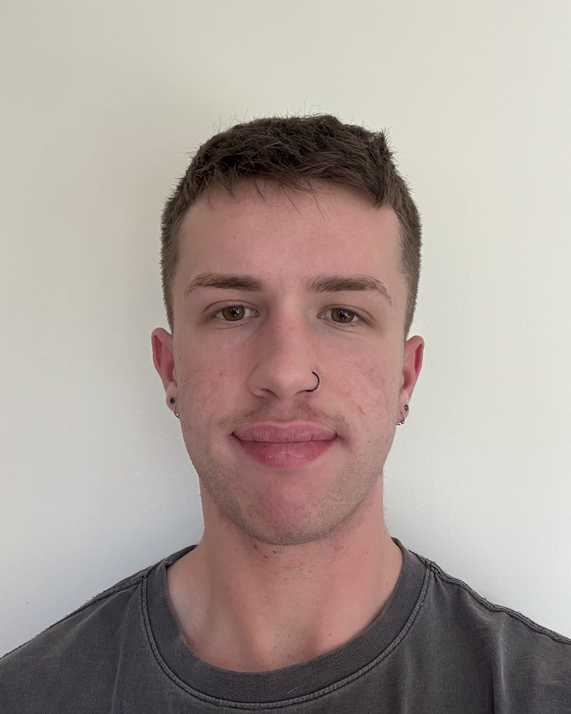

Support Coordination & Recovery Coaching, Adelaide SA
Your realignment starts here.
Your NDIS plan is meant to work for you, but navigating it alone can feel impossible. I work alongside you to make sense of your plan, connect with the right providers, and advocate for you when things go wrong.
"Since being supported by Nick, I have felt a burden lifted and I truly feel supported to make the best decisions for my life moving forward."
Helen NDIS Participant

About
Learn more about Nick
I'm Nick, a NDIS Support Coordinator, Psychosocial Recovery Coach, and the person behind Realigned Coordination. Before any of that, I'm someone who's lived this system from the inside and understands the difficulties faced daily by people with disability.
I started out in the NDIS space as a support worker and mentor for young neurodivergent children and teenagers. That work was genuinely meaningful, and it set the direction for everything that followed. Over time I built experience with a few small providers, working with participants across physical, neurological, psychosocial, intellectual, and sensory disabilities. That time taught me a lot about what good support looks like, and just as importantly, what it doesn't look like.
I bring a lived experience lens to everything I do. I'm proudly neurodivergent, and I'm also a carer for a family member on the scheme, so I understand the NDIS from both sides of the table, personally and professionally. I hold a Bachelor of Psychological Science, and I hold myself to a high standard: I want to support every participant with the same level of care I'd want for myself and my family.
Outside of work, I find enjoyment through running, practising yoga, and spending time with Lilo, my gorgeous three-year-old golden labrador (yes, pronounced like "Lilo and Stitch"). When I'm not moving, you'll probably find me with a thriller or sci-fi on, or invested in a game on my Nintendo Switch.
Behind Realigned Coordination
Eventually, working within someone else's framework wasn't enough for me. It wasn't about the people I worked alongside. It was about wanting the freedom to lead fully with my own values: justice advocacy and values-led practice. Realigned Coordination is the result of that.
The name came to me through my past experiences supporting participants. Many come to me feeling overwhelmed, stuck, or let down by a system that was supposed to help them. My goal, each and every time, is to help bring things back to a place of calm and clarity. Sometimes life just gets in the way and things need a little push to get back to where they were, and that is completely okay.
Working with me tends to feel connected and grounded, like things finally click and make sense. My approach is always tailored to the individual, but at its core it's guided by lived experience and neuroaffirming practice. I know the NDIS can feel big and overwhelming, and part of my job is making sure it doesn't have to feel that way for you.
My niche is supporting neurodivergent participants, children, teenagers, and adults, and I have a strong interest in psychosocial disability alongside other disability. Every referral I receive gets careful consideration. I'll always be upfront if something falls outside my current experience, and where I'm not the right fit, I'll point you toward trusted providers I can genuinely recommend. With that in mind, I'm always up for a challenge and expanding my knowledge and experience.
Services
Where I can help
Three levels of support, from getting your NDIS plan up and running through to specialist coordination for more complex situations.
-
Support Coordination Level 2 Whether you're brand new to the NDIS or you've been in the system for years, I provide ongoing, hands-on support tailored to where you're at.
I coordinate across multiple providers, problem-solve when things change, and keep your plan working toward your goals, all while keeping up with the NDIS rules changing all the time so you don't have to. From plan reviews and NDIA communications to the day-to-day complexity of your unique disability journey, you won't be navigating any of it alone.
- Coordinating across multiple providers so your supports work together
- Problem-solving quickly when circumstances or supports change
- Preparing for plan reviews and handling NDIA communications
- Keeping your plan on track toward your goals, day to day
-
Specialist Support Coordination Level 3 Similar to Level 2, but for participants funded at a complex needs level. I help you navigate situations that need a steadier, more specialised hand.
This level of coordination is for participants whose situations involve added complexity, things like housing instability, carer breakdown, or significant risk to safety and wellbeing. I work closely with your broader support network and any relevant services to reduce that complexity and keep your supports stable and coordinated when things are volatile.
- Navigating complex or high-risk situations, including housing instability and carer breakdown
- Working closely with your broader support network, including allied health and mental health teams
- Reducing complexity so your supports stay stable when circumstances are volatile
- Close, hands-on coordination during periods of crisis or significant risk
-
Psychosocial Recovery Coaching Capacity Building Recovery isn't a destination, it's a journey, and it looks different for everyone. I walk alongside you through the ups and downs of that journey.
I help you build everyday skills, connect with the right services, and work toward a life that feels full and meaningful. Backed by lived experience and a background in psychological science, my support is empathetic, grounded, and recovery-oriented, whether you're just starting out or navigating a difficult stretch of your journey.
- Building everyday skills and confidence at your own pace
- Connecting you with the right services and supports
- Recovery-oriented coaching grounded in lived experience and psychological science
- Support through both the steady periods and the harder stretches
How we work together
Four steps to get started
-
01
Get in touch
Complete the referral form, or call, text, or email. Tell me a bit about your situation and what's not working right now.
-
02
A no-pressure chat
No obligation. We talk through your plan, your goals, and whether I'm the right fit for you.
-
03
We build your supports
I get to work connecting providers, setting up agreements, and making sure your plan is actually being used.
-
04
Ongoing check-ins
Regular contact so your supports keep working, with adjustments made quickly when they don't.
Testimonials
What working together looks like
"I have had the pleasure of working with Nicholas Podmore as my brother's NDIS Support Coordinator for nearly a year. I am my brother's guardian. He lives with complex psychosocial disability.
The process of navigating NDIS is so complicated and the preparation of my brother's plan review used to cause a lot of stress on my family. Nicholas took the pressure off by gathering the right documentation and secure for the support hours my brother actually needs. He checks on the plan budget weekly to ensure my brother's funds are correctly utilised and within the budget.
What I appreciate most about Nicholas is his responsiveness and proactive approach. Whenever I have a question or a concern, he always return my calls and emails quickly and explain complex plan details to me patiently.
Nicholas is professional, empathetic, compassionate, supportive and caring. I would highly recommend Nicholas to anyone looking for a Support Coordinator with such qualities.
Thank you very much for your wonderful supports to our family during these days."
Lee NDIS Participant Guardian
"Nick has been an outstanding Support Coordinator for our family. Throughout our time working with him, he has constantly demonstrated genuine care, dedication, and a strong commitment to helping us navigate the challenges we have faced.
What we appreciate most about Nick is his willingness to go above and beyond. He takes the time to understand individual circumstances and follow through on what he says he will do. His calm and reassuring manner has helped reduce stress for our family, and we have always felted supported knowing that Nick is only a phone call or email away.
Nick is approachable, reliable, and easy to communicate with. He treats everyone with kindness, respect and compassion, and his genuine desire to help is evident in everything he does. We are grateful for his assistance and would highly recommend Nick to anyone seeking a dedicated and caring Support Coordinator."
My NDIS Participant Guardian
"I have been supported by Nick Podmore as a Support Coordinator since the beginning of 2025. I have been involved with the NDIS since 2023 and did not have much of an idea of what a Support Coordinator did until I was fortunate enough to work with Nick.
He has been brilliant, constantly emailing me with ideas, suggestions, and a plan for moving my life forward, in a positive direction. When he came out for our initial meeting, he had already read through my history and came to our meeting with recommendations for therapy I could use.
Although he is terribly busy, he always shows up above and beyond. Nothing is ever too much trouble for him; he is efficient and acts in a very timely manner. He is very professional, driven, and cares so deeply about every one of his clients.
Since being supported by Nick, I have felt a burden been lifted and I truly feel supported to make the best decisions for my life moving forward. I cannot recommend him enough."
Helen NDIS Participant
Frequently Asked Questions
Good to know
What can I expect from being supported by Realigned Coordination?
Responsive communication and support that's personalised to you, not a generic template. My aim is for working together to feel like a relief, not just another process to get through.
How do I check if I have Support Coordination or Psychosocial Recovery Coaching funding in my plan?
Look under the "Capacity Building Supports" section of your NDIS plan. If it's not clear, you can contact the NDIA on 1800 800 110, or get in touch and I can help you make sense of it.
What if I don't have Support Coordination funding but still need support?
There may still be options depending on your situation. Have a no-pressure chat with me first to see what can be worked out.
My funding is agency or NDIA managed, can you support me?
I'm only able to support those with self-managed or plan-managed support coordination funding.
What areas do you service?
Realigned Coordination provides services across Adelaide, South Australia. However if you're located outside SA, feel free to contact me and we can discuss your situation.
How can I contact you?
Email nicholas@realignedsc.com.au, or call or text 0494 650 212.
What's the quickest way to get started?
Complete the referral form below, or get in touch directly for an initial conversation.
Contact
Referral & contact
I'd love to see if I can help out. Complete the referral form below to get started, or if you'd rather just say hello first, feel free to call, text, or email me directly and we can go from there.
- Phone / text
- 0494 650 212
- Areas serviced
- Adelaide, South Australia. If you're located outside SA, contact me to discuss your situation.